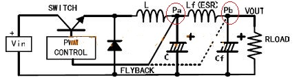

AMS1117-5V的Datasheet上要求的最低压差（VIN-VOUT）为1.1V到1.25V，这就要求输入要大于5V+1.1V=6.1V，如果输入不满足这个条件会怎么样呢？
输入分别使用AC/DC适配器和MP1593输出的5V实验，后端AMS1117的输出都约为4.1V左右，无法稳定要所需要的5V电压。
但输出纹波确实有所改善，MP1593输出5V纹波峰峰值达140mV，经过AMS1117后纹波约40mV（测试未考虑示波器探头的影响）。
我遇到一种情况：使用5V电源给运放或AD等有低纹波要求的芯片供电，为节省能量，常常前端使用DCDC输出5V电压，由于DCDC的输出纹波大，所以有人推荐DCDC后接一块LDO稳定纹波。基于上述的测试结果，像AMS1117这种LDO是远不能满足要求的。
因此，在后端使用LDO滤除DCDC纹波要选择低压差或超低压差的LDO，其输入输出VIn-VOUT最小值在0.1~0.2V最佳，这样输出电压损失最小。
原本想买金升阳的产品，在淘宝上竟然被骗了（错把MICRODC当成了MORNSUN），买成了WRB0512YS-3W2R。
因为我的输出12V要用于对传感器供电，因此对纹波要求非常高，这里对这两个产品测试对比。
输出滤波使用LC滤波电路，电感取值为1mH，电容取值100uF，测得金升阳的产品纹波dVpp=40mV。另一家的使用50mH电感，电容取值100uF，纹波也才40mV左右，若电感值取1mH，在纹波能达到100mV。
由此可见，金升阳的DCDC产品还是要比一般的DCDC要好一些！
LC电路对滤除纹波的作用很明显，对MP1593输出5V的电路进行测试，在输出端接二级LC滤波前，纹波峰峰值60mV，接二级LC滤波后峰峰值变为10mV。
二级滤波的LC等效电路就是下图，实际测试MP1593时后端电容使用了大电容（100uF）+小电容（0.1uF）并联方式：

但使用LC也需要注意些问题，那就是DCDC的反馈电压（FB）采样点：